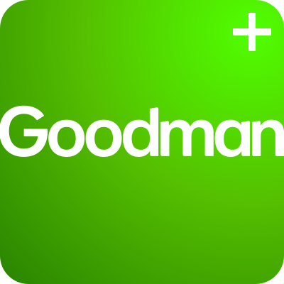
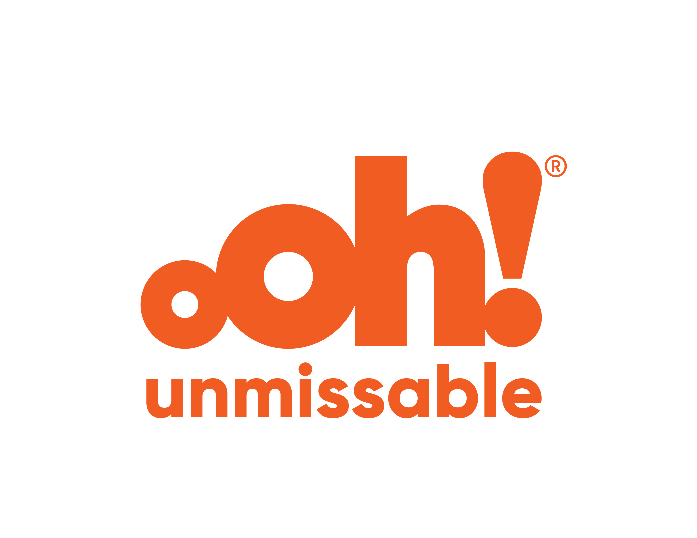

A living reference for the design tokens and components behind the GreenPower build. This page is an internal guide, not a Drupal template. Foundations come first, then components and layout patterns.
Foundations
The values everything else is built from: the colour tokens, the fluid type scale and the icon set. Change one here and it changes everywhere it is used.
Colours
Every colour in the system is a token in scss/tokens/_colors.scss — the only file allowed to hold raw values. Components reference the semantic UI aliases, never the brand values directly.
Pale Mint$color-brand-pale-mint#D5E7D2 · Pantone 9561
Taupe$color-brand-taupe#EBE5D3 · Pantone 9143
Tints
Accessible background versions — pale enough to carry Primary Green text at AA.
Dark Green 8%$color-tint-dark-green#EBF3F0
Light Green 35%$color-tint-light-green#E8F4DA
Pale Mint 60%$color-tint-pale-mint#E7F3E5
Taupe 60%$color-tint-taupe#F3EFE5
Neutrals
White$color-white#FFFFFF
Black$color-black#000000 · translucent media scrims only
UI semantic
Aliases that components reference. The translucent chips are shown over a split white / Primary Blue field so their alpha reads on both a pale and a dark ground.
Text$color-ui-text→ brand-blue
Heading$color-ui-heading→ brand-blue
Link$color-ui-link→ brand-dark-green
Background$color-ui-background→ white
Surface$color-ui-surface→ tint-taupe
Focus$color-ui-focus→ brand-green · 3.5:1 on white
Border$color-ui-borderbrand-blue @ 15%
Border strong$color-ui-border-strongbrand-blue @ 50% · form control boundary
Overlay$color-ui-overlaybrand-blue @ 50% · control chips on media
Scrim$color-ui-scrimblack @ 35% · video scrims
Scrim wash$color-ui-scrim-washblack @ 10% · flat wash over video
Typography
One typeface, one fluid scale. Sizes are clamp() steps that interpolate between a 375px and a 1440px viewport, so nothing snaps at a breakpoint; above 1440 the root font-size itself scales, carrying every step with it. Components reference the semantic aliases ($font-size-base), never the raw --step-* names. Pixel values are read live from the cascade — and note they are measured in this pane, which re-scopes the steps to its own column width (cqi) so components preview at the size they would be on a page this wide. Widen the pane or collapse the sidebar and every number here moves.
Typeface
TT Commons Pro, served from Adobe Fonts. The kit maps the family's faces to shifted CSS weights, so the tokens are named for the face that actually renders — not the number.
Regular — the quick brown fox
$font-weight-light 300
Medium — the quick brown fox
$font-weight-regular 400 · body default
DemiBold — the quick brown fox
$font-weight-medium $font-weight-demibold 500 · all headings
ExtraBold — the quick brown fox
$font-weight-bold 700
Headings
Every level renders at weight 500 with a 1.15 line-height, set once in base/_typography.scss. Components that need a different size set their own; the leading and weight always come from here.
Heading level 1
h1 · $font-size-3xl
Heading level 2
h2 · $font-size-xl
Heading level 3
h3 · $font-size-lg
Heading level 4
h4 · $font-size-base
Heading level 5
h5 · $font-size-sm
Heading level 6
h6 · $font-size-xs
The scale
The raw steps behind those aliases. Each is a clamp() in tokens/_typography.scss, generated from a 1.2 → 1.3 modular ratio.
Step 5
--step-5 · $font-size-4xl
Step 4
--step-4 · $font-size-3xl
Step 3
--step-3 · $font-size-2xl
Step 2
--step-2 · $font-size-xl
Step 1
--step-1 · $font-size-lg
Step 0 — body copy
--step-0 · $font-size-base
Step −1
--step--1 · $font-size-sm
Step −2
--step--2 · $font-size-xs
Body copy
Body runs at step 0 with a 1.3 line-height and text-wrap: pretty inherited site-wide. Long-form prose is capped to the reading measure — see The measure, below.
GreenPower makes it easy to recognise and purchase renewable electricity and gas that meets stringent environmental standards. Accreditation applies to the fuel or product itself, not to the organisation producing it.
p · $font-size-base
The measure
Measure is the traditional typographic name for a column’s line length. Bringhurst (The Elements of Typographic Style) gives 45–75 characters as satisfactory for a single-column page, with 66 as the classic ideal — about 9–12 English words; WCAG 1.4.8 (AAA) caps line length at 80. It is set once as --measure: 50ch in pages/_content.scss and consumed by both content layouts — Content: Single column, and the scrolling half of Content: Split sticky left.
Why 50 and not the textbook 66: ch is the advance width of the digit 0, not the average glyph — and TT Commons Pro’s digits are wide, so 1ch ≈ 1.4 average characters. The obvious 66ch would render about 87 characters a line, past both ceilings. 50ch was tuned against real rendered lines: ~63 characters on a typical full line, 72 at the longest, all inside the 45–75 band. It stays in ch so the character count holds at every viewport — and it must be re-measured if the body face ever changes; the number does not transfer between typefaces.
--measure: 50ch · the dashed rule marks the cap
GreenPower comes from energy sourced from the sun, wind, water and waste, which produce no additional greenhouse gas emissions. It is bought by your energy provider on your behalf, and every certificate is checked in the program’s annual audits. The measure holds a line like this one to a comfortable read — the eye drops to the next line without losing its place.
Icons
15 line icons in assets/icons/, drawn on a 55×55 grid in Dark Green. They are referenced as files through <img>, not inlined, so the artwork's own fill is the colour — currentColor has no effect on them. Components render them at $icon-size (card, feature banner, bento and subscribe all share the one variable, so the set resizes in a single line). In Drupal these become media entities on field_icon, so editors pick an icon rather than a template hard-coding one.
On light surfaces
Rendered as authored. The filename is the reference — it is what a template's src points at.
accreditation.svg
bill.svg
bio.svg
business-greenpower.svg
document.svg
electricity.svg
gas.svg
greenpower.svg
home.svg
magnifi-dollar.svg
shield-tick-badge.svg
tick-badge.svg
tick-dollar-shield.svg
tick-lgcs-badge.svg
up-dollar.svg
On dark surfaces
The same files knocked out to white with filter: brightness(0) invert(100%) — the shared trick the feature banner, bento stat tiles and footer logo use, since a file-referenced SVG cannot be recoloured any other way.
accreditation.svg
bill.svg
bio.svg
business-greenpower.svg
document.svg
electricity.svg
gas.svg
greenpower.svg
home.svg
magnifi-dollar.svg
shield-tick-badge.svg
tick-badge.svg
tick-dollar-shield.svg
tick-lgcs-badge.svg
up-dollar.svg
Headers
Every way a page can open: the homepage hero, the interior band, and the two article variants (a filtered listing, and an article with its sticky rail). All but the hero are one component — .page-header — carrying a modifier and different content.
Homepage hero
The full-viewport opener, homepage only. A rotating background video behind a sticky content layer, the brand angle shape cut into its foot, and a GSAP SplitText reveal on the headline. Too tall and too motion-heavy to demo inline — open the home template to see it, and read docs/animation.md for the four systems it composes (parallax, the scroll-exit, the shape entrance and the auto-hiding header it sits under).
Why it is not demoed here
The hero measures its own journey against the viewport — a sticky frame, a scroll-linked exit and a 100svh media layer. Inside a documentation column those measurements are meaningless, and a scaled-down copy would misrepresent the timing. The behaviour contract that matters is in scss/organisms/_hero.scss and the LESSONS.md entries on overflow: hidden vs clip and the parallax offset.
The interior-page banner: breadcrumb, H1 and summary on a Dark Green band, with an optional image filling the right side and its top-left corner cut by the brand angle — the same 45° + artwork-bézier geometry as the hero panel. Toggle the image off and the shape stays, filled flat in Primary Green; on phones it drops away entirely, so an imageless header ends cleanly after the summary rather than stacking a decorative block. In Drupal this is page-level (node title, field_summary, optional field_header_image) with the breadcrumb block placed in the band — not a paragraph.
How GreenPower works
The GreenPower label makes it easy to recognise and purchase renewable electricity and gas that meets stringent environmental standards.
Article landing header
The listing band: the same .page-header, imageless (--empty paints the brand-green block and angle where field_header_image is empty), with the filter pills composed INTO the band. The pills are the view's exposed form, styled — solid fills, because the row runs over the angle shape past a certain width where a translucent pill would fail contrast. Used by News landing, Consultations, and Program Rules and legislation.
Listing intro — field_summary. One or two lines describing what the listing holds.
Article header
The article band: --media-left mirrors the image to the left, and an .article-meta row states the type and dates (or, on an impact story, the product line). The rail below the band repeats that meta and reveals it once the band scrolls away — the repeat is aria-hidden, since this copy comes first and carries the labels. The media box paints the band colour behind the image so its clipped edge cannot show a hairline at fractional widths.
Two kinds of date, one of them marked. A news item about an event states the EVENT dates first, with the calendar glyph, then its published date with no glyph — the mark is what tells the two apart at a glance when a card carries both, so it belongs to the event row and never to the published one. Most articles have no event and show the published date alone (see the consultation and rules-and-legislation templates); the specimen below shows both so the pairing is on the record. Each label (“Event dates”, “Published”) is visually hidden, because on screen the glyph and the position carry the distinction while a screen reader needs it said. Drupal: field_event_start / field_event_end drive the first item and the glyph with it; omit the whole <li> when they are empty rather than rendering an empty row.
Article summary — field_summary, one or two lines.
Type
Event dates: –
Published
Components
Reusable blocks. Each one maps to a Drupal paragraph type, and each carries its field list, preprocess notes and known risks in the SCSS partial that styles it.
CKEditor WYSIWYG
Every rich-text body field renders inside one wrapper — .page-content__section — and that wrapper is the only place prose is styled: <div class="page-content__section">{{ content.body }}</div>. Scoping it this way is what stops prose styling leaking into components — a .card__title that happens to be an h2 is untouched by any of it. The inventory below is everything the wrapper styles, and it is meant to be exhaustive: whatever is not here, the CKEditor toolbar should not offer (docs/wysiwyg-output.md).
The elements
Each block below is its own .page-content__section at the reading measure, labelled with the tags it covers. Nothing here carries component CSS — the one wrapper class does all of it.
h2 – h6 · heading levels
Headings take more space above than below, so each binds to the text it introduces rather than floating between blocks. Size and weight come from the site ladder in base/_typography.scss — the wrapper adds only the prose rhythm and the Dark Green.
Heading level 2
Prose starts at h2: the page itself owns the h1, so an editor never types one.
Heading level 3
Body text follows the heading it belongs to.
Heading level 4
Body text follows the heading it belongs to.
Heading level 5
Body text follows the heading it belongs to.
Heading level 6
The smallest level is uppercased so it reads as a label rather than a run of shrunken text.
p · a · strong · em · code
Body copy runs at the base step on the site's own leading, and links carry a resting underline so colour is never the only thing marking them. Hover one and a green bar grows from the centre out, replacing that underline rather than stacking beneath it — and because it is painted per line fragment, a link that wraps gets a correct rule on each of its lines. Emphasis comes through strong and emphasis; a token or filename reads as --space-m inline.
Chemistry and units keep their real markup too — biogenic CO2, a footnote marker1 — both on browser defaults, since neither needs a rule of its own.
ul · ol · li · nested lists
Renewable electricity, certified with an LGC
Renewable gas, certified with an RGGO
Biomethane from wastewater treatment
Biomethane from agricultural feedstock
Emerging renewable fuels and products
Confirm your feedstock and production pathway are in scope.
Submit supporting measurement and chain-of-custody evidence.
Complete an independent audit before certificates are issued.
blockquote · cite — the editor-typed pull-quote
Certification gives buyers a single, verifiable claim — one that stands up to scrutiny from regulators, auditors and customers alike.
GreenPower Program Rules, 2026
An image placed straight into the body field: rounded, capped to the column, caption below. Anything that has to break out of the column is a paragraph component instead.
hr — divider
The divider separates two runs of content inside a single body field.
It carries its own generous space above and below, so it reads as a break rather than a rule between paragraphs.
Editor configuration
The toolbar should offer exactly what is above — no more. Strip inline styles in the text format filter, disable the font size and font colour plugins, and allow headings h2 to h4 only. Otherwise editors can insert an element with no style, or hard-code colours and sizes that break the design system. CKEditor 5 wraps inserted images and tables in a <figure>; the wrapper already styles figures, so that output needs nothing extra.
What belongs in a component instead
CKEditor is not a layout tool. A photo that breaks the column, a quote with a portrait, or a group of cards are paragraph components placed as siblings of the body field — see Full width image caption, Quote and Card. They need real media references for image styles, srcset and alt handling, none of which survive being typed as markup into a body field.
Card
One component composes any of: image, icon, title, body and links — every part optional, and direct children are gap-spaced so leaving one out never leaves a hole. Toggle the parts to watch the same component reconfigure live: the controls add and remove the card’s real child elements, so the .card CSS is never touched. In Drupal each part maps 1:1 to a field on the card paragraph.
Heading 3
Optional intro text. Choose accredited renewable electricity through your energy provider.
A full-bleed split promo on Dark Green: icon eyebrow, title, intro and a white link list beside a media panel that sits tight to the section edges (the same snug image-to-edge spacing as the card images). Hovering or focusing a link crossfades to that link's image and zooms it (Ken Burns drift underneath), and swaps the location pin. The image also drifts on scroll (parallax, on the live page). The badge is the hero's angle shape, flipped and scaled. The link list is repeatable — an editor adds as many as they need and each carries its own image and location. Content enters with the shared data-animate stagger.
Products and solutions
Explore GreenPower renewable electricity, renewable gas and emerging renewable fuels and products. Learn how each solution works and choose the option that best suits your home, business or organisation.
A full-bleed impact mosaic on Taupe: three equal columns, each stacking one media tile (photo with a bottom title and link over a scrim) and one stat tile (icon, figure and support line on Dark Green). The middle column reverses its stack for the staggered bento rhythm — column heights stay aligned automatically because every column holds the same tile pair. Tiles enter with the shared data-animate stagger, per column; everything collapses to a single even stack on small screens.
A full-width photo with a caption pinned to the bottom-right in the shared hero-angle badge. The image sits in a rounded, clipped stage, carries the same scroll-in entrance zoom as the card and bento images, and drifts with the shared parallax. Built on the feature-banner media panel; the caption badge reuses the angle shape via the shared angle-badge mixin.
Image caption GreenPower image description
Video embed
A provider video in the reading column: the provider’s own iframe in a ratio box, plus an optional caption. Nothing else — the player chrome, poster frame and play button all belong to the provider, and reimplementing any of it would mean shipping a player we do not control. A component, not something an editor types, because a video has to be a real media reference to carry its title, provider and thumbnail (docs/wysiwyg-output.md: “CKEditor is not a layout tool. Prefer option 1 for anything non-trivial”) — the same relationship Quote has to a prose pull-quote. An editor who pastes a URL into the body field still gets a floor: see figure.media in the CKEditor WYSIWYG section.
The ratio is a custom property, not a modifier
aspect-ratio sits on the iframe itself — no wrapper, no padding-bottom hack, and it holds at every width without a breakpoint. It defaults to 16:9 because that is what every major provider serves; a video that genuinely is not 16:9 overrides --video-ratio on the figure rather than earning a modifier, so one property covers every shape.
The embed src will change at port
This prototype points straight at youtube-nocookie.com. Drupal core Media does not — it proxies through its own /media/oembed?url=… route so third-party frames are sandboxed off-domain, and GovCMS commonly blocks direct third-party embeds outright. Expect the src to change shape; the styling does not care, since it only targets the iframe. Keep the title attribute whatever happens — an untitled iframe is an unlabelled region (WCAG 4.1.2), and in Drupal it comes from the media entity’s name.
video_embed · .video-embed — shown at the reading measure, which is where it belongs
Caption — field_video_caption, optional
Quote
A standalone testimonial: quote, then an attribution row of portrait, name and role. The portrait is optional — toggle it off and the row is simply name and role, with no empty circle held open. This is a component rather than something an editor types into CKEditor, because the portrait has to be a real media reference to get image styles, srcset and alt handling; a hand-written <img> in a body field gets none of those (docs/wysiwyg-output.md: “CKEditor is not a layout tool”). It shares the green rule and Dark Green text with the prose pull-quote so the two read as one family. In Drupal: paragraph quote, placed as a sibling between body paragraphs — or embedded with entity_embed if it must sit mid-field.
“Each accredited generator goes through a rigorous review process so that GreenPower customers can trust their electricity choices are driving real change in the energy mix.”
Persons NameGreenPower, Program Manager
Accordion
A stack of rounded disclosure cards for FAQs and dense reference copy — the card family's taupe surface and hover lift, questions in the heading blue, answers in standard body text. Built on <details> and <summary>, so opening, closing, keyboard operation and the collapsed/expanded announcement all come from the browser — this component ships no JavaScript. The height animation is pure CSS (::details-content plus interpolate-size); where a browser doesn't support it the panel just opens instantly, still fully functional, so there is no fallback script to write. Each panel body is rich text wrapped in .page-content__section, so lists, links and tables come free rather than being restyled here.
In the reading column
Shown at the reading measure, which is where this belongs — the questions are prose, not a grid. Open two at once: the group is deliberately not exclusive, because FAQ readers routinely compare answers. Adding a shared name attribute to every <details> makes it exclusive natively, still with no script.
Where does GreenPower come from?
GreenPower comes from energy sourced from the sun, wind, water and waste which produce no additional greenhouse gas emissions. It is bought by your energy provider on your behalf. GreenPower is the only government accredited renewable energy in Australia.
How do I know that I am getting the GreenPower I pay for?
Every year, the GreenPower program accesses the sales and purchase records of all GreenPower Providers and checks that they are buying the renewable energy sold to their customers. This is published in the annual audit reports.
Why switch to GreenPower?
Electricity makes up around 50 per cent of a typical household’s greenhouse gas emissions. If you buy 100 per cent GreenPower, your energy company will replace the same amount of energy from renewable sources that would have otherwise been sourced from fossil fuels such as coal.
Drive demand for renewable energy. Your contributions will help grow the renewable energy sector.
You can help reduce water consumption. Renewable energy generators use much less water than coal and gas powered stations.
How much GreenPower should I buy?
The more you buy the better. You can choose what percentage of your electricity usage you would like to match with GreenPower.
For example — if you buy 100 per cent GreenPower you have matched all of your household or organisation’s electricity consumption with renewable energy.* This energy is added to Australia’s electricity grids. The more people and organisations that choose to buy GreenPower the more renewable energy is added to the grid.
* Some GreenPower products are calculated based on the average Australian household’s electricity consumption. Check with your electricity retailer to confirm the amount of electricity in kWh you are matching with GreenPower.
Heading level is contextual
A <summary> may hold either phrasing content or a single heading element, so each question is a real heading — which lets screen reader users jump between questions by heading. The LEVEL is not the component's decision: it is h4 here because these sit under an h3 section title, and would be h3 on a page where the accordion follows an h2. In Drupal, expose it as a preprocess variable rather than hard-coding one.
Modal
An explainer overlay opened from a link — short reference copy the reader wants without losing their place in a listing (the buy tool's “What are these?” links). Built on the native <dialog> opened with showModal(), so the focus trap, focus restore on close, Escape, and the inert page behind it all come from the browser; the script only opens it and closes on a backdrop click. The body is rich text wrapped in .page-content__section — whatever an editor writes in CKEditor renders here with the prose styles it would have on a page. In Drupal the trigger is a real link to the explainer node, enhanced with core's use-ajax modal — with JS off it is simply a working link to a working page.
Opened from an inline link
Close with the × button, a click outside the panel, or Escape. On small screens the panel keeps a gutter on every side and the body scrolls inside it — the head does not scroll, so the close button stays reachable however long the copy runs. A press that starts inside the panel and releases outside — selecting text, on a phone — does not close it.
The referral card a listing shows when it cannot help. On the buy directory these appear for a business buying electricity — an event wanting a GreenPower partnership, and an energy user too large for any retail plan — both real demand the rows below cannot serve, so the page hands them to GreenPower rather than leaving them to work out that the results are not for them. Dark Green because this is the page talking to the reader, where the taupe card family is what the records wear. Buttons pin to the foot so they line up across the row however unevenly the copy falls.
Editorial content with a display condition
Not a filter and not a result — which is why it is its own component rather than another state on the filter. It takes the same data-visible-when attribute the filter's dependent groups use, so one evaluator drives both, but nothing here knows anything about a form. In Drupal these are blocks in the view's header region with a visibility condition, not paragraphs on the node; heading, body and link are all fields, and nothing assumes two cards — the grid holds one or three without a rule per count.
Running an event?
Interested in having your event powered by accredited renewable electricity through a GreenPower partnership?
The prompts sit above the results and the results still show. Confirmed by the client rather than assumed — they do not replace the list. The two cases are an event seeking a GreenPower partnership and a large energy user, and both are a different conversation from the retail plans below rather than a correction to them: neither reader is being told the list is wrong for them, they are being offered a second door. Still open: XXX MWh is the wireframe's placeholder and needs a real threshold.
Download
A file card: cover, title, summary, and the file's own size and format. One component covers both placements — a single file dropped into the page, or a group of files under a heading. A group is just an accordion item, so several groups is several accordion items: no separate “download group” component exists, because the accordion already does disclosure and this adds nothing to it.
Size and format are not editorial
They come from the file entity — {{ file.filesize|format_size }} and {{ file.filemime }} — never from fields an editor types. A hand-typed “1.42 MB” goes stale the moment the document is replaced, and stale file metadata is a standard finding in government accessibility audits. Deriving it also means editors cannot get it wrong, which is the bigger win.
Both sit inside the link, along with the document title in a visually-hidden span: “Download” on its own is not a meaningful link name on a page holding twenty of them (WCAG 2.4.4). This one announces as “Download 2024 Q1 GreenPower Quarterly Report, 1.42 MB, PDF” while staying compact on screen. Telling people the format and size before they follow the link is the point.
A single download
Dropped straight into the page. The cover is optional and always decorative (alt="") — the title beside it carries the meaning.
Name of the download file
Summary — field_download_summary, optional. One or two lines describing what the document contains.
Each group is one accordion item, its heading the group title. Inside, the files lift to white to separate from the Taupe pill — the download sets that itself via a custom property, so the accordion stays unaware that downloads exist.
2024 Quarterly Reports
2024 Q1 GreenPower Quarterly Report
The information in the quarterly reports is based on preliminary sales data submitted by GreenPower Providers.
A band of customer logos under a centred heading. It scrolls itself continuously in one row, at a constant speed derived from the measured width — adding logos makes the loop longer, not faster — and falls back to a manually scrollable region without JavaScript or under reduced motion. The marks render as a duotone — greyscaled, with black mapped to Primary Blue and white left white — so the band reads as one quiet near-black row rather than twenty competing palettes. Primary Blue on purpose, as the palette’s black: third-party guidelines that permit single-colour logo reproduction almost always permit black, and #00263E reads as neutral ink — a saturated hue would read as other people’s marks wearing GreenPower’s identity. The mechanism is a white ground under each logo, filter: grayscale(1) on the image, and a Primary Blue plate blended with mix-blend-mode: screen; where blend modes are unsupported the band degrades to plain greyscale, and the source files are untouched, so full colour is one deletion away. These are other people’s brand marks — confirm brand-usage approval for the monochrome treatment before publication. Each alt is the organisation name, because who the customers are is the content.
Pause control
Motion that starts on its own and runs past five seconds needs a mechanism to stop it (WCAG 2.2.2, Level A), so the band carries one — the same pattern as the hero's video control. It appears only when the marquee actually mounts: with no JavaScript or under reduced motion nothing moves, and a button that paused nothing would be worse than none. Hovering or focusing the band pauses too, as a convenience rather than the compliance story.
Businesses and events buying 100% GreenPower


Pathway
A “choose the route that describes you” chooser: a Dark Green panel per category, holding one pale card per route with its own link list and a find CTA. Type and link anatomy match the card deliberately — same title step, same small-step divided links with the arrow pinned right — because a pathway is a card with a CTA and should not read as a new species. Three nested pieces, one per level the editor adds: .pathway-section, .pathway-group, .pathway, mapping to three paragraph types.
Choose your accreditation pathway
Select the pathway that best describes your organisation. Each pathway includes eligibility information, accreditation steps, responsibilities and relevant resources.
The components the three directory tools carry and no editorial page does: the record card, the two-pane layout it sits in, and the map beside it. They are catalogued here because they are the pieces most likely to be rebuilt from scratch during the Drupal port — a view row, a views layout and a geofield map — and the decisions in them are easy to lose. Live on Electricity generators and Gas producers.
Generator card
One accredited generator in the directory listing. The card family’s surface conventions — tinted tile, brand radius, gap-spaced children — carrying a record rather than editorial teaser copy. It is its own block, not more .card pieces: the news additions were optional elements on the same teaser anatomy, but this layout (head row with a side thumbnail, dl meta, action row) shares none of the card’s structure — only its tokens.
The full record
Ten fields, four of them optional. The place line carries suburb, state and postcode as one string, which is also what the search reads — so what matches is always what is displayed, with no second copy to fall out of step. Capacity keeps its unit. The two actions differ by element on purpose: Visit website is a link (navigation, and it leaves the site, hence the external glyph) while View on map is a button (an action — it pans the map beside it). That distinction is the one in docs/frontend-rules.md, not a styling preference.
Two tiers on the gas producers tool. Name, company, place and the primary meta are the glance; feedstock, GHG LCA emissions (excl. combustion), full lifecycle emission reduction, expected completion and the description fold behind a native More details disclosure — the accordion’s mechanism, with the label swapping to Less off the [open] state the browser maintains. This replaces the ticket’s pending expanded/modal view: the card expands in place, so there is no third surface, no focus trap and no close-on-outside-click machinery. The map popup renders the glance tier only (its builder reads the card’s first dl), and the map’s “View details” crossing opens the card with its disclosure expanded. Expected completion appears on future projects only — an omitted row is an empty field, while “TBD” is an editorial value on an announced project (units and semantics: JIRA D16; what “Accredited” means on an unbuilt plant: D17).
Accredited
Generator name — field_title
Company — field_gen_company
Suburb, State 0000 — field_gen_place
Generator type
field_generator_type
Capacity
000 MW — field_capacity
CER code
field_cer_code
Description — field_gen_summary, optional. Accreditation and Power Purchase Agreement detail, capped at a readable measure so a long entry does not run the width of the card.
Image, description and website are all optional, and an editor will leave them blank. The card takes it without a variant class — it simply has fewer children and closes up around them, so there is no media column, no summary, and an actions row carrying only View on map. Note what View on map does here: it holds the right edge whether or not a website link sits beside it, because space-between only separates two items and the control would otherwise move depending on data the reader cannot see. In Twig each optional field wants an {% if %} around the whole element — never an empty <p> or a link with no href.
Accredited
Generator name — field_title
Company — field_gen_company
Suburb, State 0000 — field_gen_place
Generator type
field_generator_type
Capacity
000 MW — field_capacity
CER code
field_cer_code
Selected from the map — .is-highlighted
Set on the card whose pin has been clicked, and cleared when the popup closes, so the list and the map read as one interface rather than two views of the same data. An inset ring, not a border and not an outline: a border would add 2px to the box and nudge every card below it the moment a pin was clicked, and an outline sits outside the radius where the list’s gap is tight enough for neighbouring rings to touch. It is decorative only — the popup names the generator and the scroll puts the card on screen, so nothing here is the sole carrier of the message, which is why it is a plain class and not aria-selected on a listbox the markup does not have.
Accredited
Generator name — field_title
Company — field_gen_company
Suburb, State 0000 — field_gen_place
Generator type
field_generator_type
Capacity
000 MW — field_capacity
CER code
field_cer_code
Drupal
A node teaser view mode of accredited_generator, rendered as the rows of the generators view: title, field_gen_company, field_gen_place (suburb, state and postcode as one string), field_state and field_generator_type (taxonomy, and the two exposed filters), field_capacity, field_cer_code, field_gen_summary, field_gen_url, field_gen_image, and field_location (geofield — the template writes it to data-lat/data-lng for the markers; a missing value drops the marker, never the row). The Accredited badge is structural, not a field: everything in this directory is accredited by definition.
Directory layout
The two-pane shell around the cards: a scrolling list with a sticky map beside it. The exposed filters sit in the page header band above (see Filter option states), and the count row below them carries the result total and — on smaller screens — the view toggle.
Count row and view toggle
The count is a live region: it updates as filters change and announces the new total without stealing focus. The toggle is a real role="group" of two buttons carrying aria-pressed, not a pair of links — switching view changes nothing about the address. It only exists below 1200px. From lg the map is a sticky column beside the list and both are on screen at once, so there is nothing to choose between; the toggle is hidden and the buttons stop being reachable. With no JS the toggle is hidden at every width, because there is no map to switch to and a control that does nothing is worse than none.
Showing 000 accredited generators
No pager — the map is why
The list renders every record; the filters are the narrowing mechanism. Markers derive from the rendered cards — one source of truth — so a paged list would page the map: ten pins of three hundred, quietly lying about coverage, and the pin→card link pointing at cards that are not on the current page. At directory scale (a few hundred records) the full list is safe: images are lazy, markers cluster, and find-in-page works across the whole directory. The current site ships the same way. In Drupal the view’s pager is “Display all items”; the news listing keeps its real pager — there is no map there to keep honest.
The sticky map column
From lg the map pane sticks full-height while the list scrolls past it, inset by the section’s own --space-xs frame top and bottom and carrying the brand radius. It steps down below the auto-hide header when that bar reveals — the same published --header-height and the same timing as the article rail — and gives back in height what it takes in top inset, so the bottom inset holds. A ResizeObserver has Leaflet re-measure through the ease, or the tiles would be laid out for the old height. That moving inset is why the pin→card scroll closes its gap per frame rather than aiming at a position worked out in advance — see the note under Map panel.
Map panel
Leaflet with OpenStreetMap tiles, carrying one marker per visible record. Markers follow the filtered list rather than the full set — one source of truth, so the map can never show a generator the list has filtered away. Only markercluster’s structural stylesheet is loaded: the count bubble is built by iconCreateFunction and styled here, so it wears the system’s colour and type rather than the library’s default. Shown flat below, without a map behind them — the live version is on the tool pages.
Pin and cluster
The pin is a divIcon anchored so its tip sits on the coordinate, with the popup opening above the head. A drop-shadow filter lifts it off busy tiles without a second shape to maintain. The cluster is the same palette one step louder, because it stands for several: Dark Green with a white ring, and its count is the accessible name — markercluster makes the bubble a focusable button. Both take the standard focus ring, offset so it clears the teardrop’s point. The third mark is the reader: a brand-blue DOT, deliberately not a second teardrop — pins mean generators here, and one symbol must not carry two jobs (the rule that gave the view toggle a folded map instead of a pin).
7
Marker popup
A label on a pin, not a second copy of the card: built from the card, so the same title, company, place, meta rows and optional photo — and nothing else. The description and website live on the card alone. Leaflet fixes the balloon at 252px so the photo’s height is deterministic, and the title reserves room at its right for the close button that sits on that line. Every text row is a <p> qualified by element as well as class — Leaflet ships .leaflet-popup-content p { margin: 18px 0 }, which outranks a plain class, so the rhythm has to win on specificity rather than by resetting broadly.
View details is the crossing to the record: it filters the listing to that one generator, shows the list view and puts focus on the card. It filters on the record’s IDENTITY, not on its name — the search box matches a substring of name, company and place, so a name filter would return “Ararat Solar Farm 2” for “Ararat Solar Farm”. The chip it draws sits alongside whatever the reader had already filtered by, and removing it puts them back exactly where they were. Stacked widths only: from md the card is already beside the map and a pin click rings it, so the control is hidden. Drupal: an exposed filter on the node id, not a title search.
Generator name — field_title
Company — field_gen_company
Suburb, State 0000
Generator type: field_generator_type
Capacity: 000 MW
CER code: field_cer_code
“View details” — the pin’s way back to the record
This was a native <details> holding the description and the website, and it worked — but it made the balloon a second, smaller card, with the same copy in two places and a paragraph of prose to read at 252px over the map it was pinned to. The record has one home now. The control crosses to it: it applies a record filter, switches to the list and moves focus to the card, where the description, the website and everything else already live.
A filter, not a search. The chip carries the generator’s name, but the filter behind it is the record’s identity — the search box matches a substring of name, company and place, so filtering by the words would also return “Ararat Solar Farm 2” for “Ararat Solar Farm”, and this listing carries both an Ararat Wind Farm and an Ararat Solar Farm. “Showing 1” has to be true by construction. In Drupal that is an exposed filter on the node id, with the CER code as the stable identifier if the URL should carry it.
It adds to the reader’s filters rather than replacing them. Someone who has narrowed to Victoria and tapped a pin gets the record chip beside their VIC chip; removing it drops them back into the two results they had, with the tick-boxes and the search box untouched. Clear all takes it with everything else.
Three things the port should keep. The popup closes on activation — a balloon left open over a pane about to be hidden is state nobody chose. The ring goes on after that close, because popupclose clears the ring belonging to its own card and would otherwise wipe the one just set. And focus moves to the card (a temporary tabindex="-1", removed on blur) because the pane under the reader changes: a keyboard or screen-reader user has to arrive somewhere, and the count region announces the new total on its own.
“Find my location” — the reader on the map
The control sits with the filters, after them, because it is the third way to narrow the question — “near me”. It acts on the map though: it pans the view and lets the clusters and the pin→card link do the rest. Nothing is filtered, nothing is reordered, the count does not move. Below lg it brings the map view up first.
The script REVEALS it — the markup ships it hidden. Geolocation needs JS and a secure context, and Leaflet may be blocked entirely; a control that cannot work is worse than none, the same rule the view toggle and the scroller arrows follow. Both refusals (no API, or permission denied) land in the band’s role="status" line, announced without stealing focus and visible to everyone else. The reader’s dot is shown with the other map marks above.
The two-way link between list and map
Card → map: View on map brings the map on screen if it is not (below lg), pans to the generator, breaks open the cluster if the pin is inside one — a marker that is not on the map cannot open a popup — and opens it. Map → card: clicking a pin rings its card with .is-highlighted and brings it level with the map’s top edge.
That scroll closes the gap a fraction per frame rather than scrolling to a computed position, and the reason is worth keeping: the map’s sticky top steps by --header-height when the auto-hide bar moves, the bar moves in response to scrolling, and the scroll is the thing being sized. Aim at where the map is and the bar slides out from under you; aim at where you predict it will be and a short hop never crosses the bar’s threshold. Either way the correction lands as a visible snap. Measuring the live gap every frame removes the guess — the bar can appear or retract mid-flight and the motion absorbs it. Two limits are deliberate: the travel is clamped to the map’s sticky range, so a card near the end of the list rides as high as the column allows rather than running the page past the directory onto the footer; and the reader’s own wheel, touch or key input cancels the glide.
Multi-select filter
The directory tools’ “choose any number of these” control: a pill trigger that summarises the choice, over a floating panel of checkboxes. Not a <select multiple> — that control needs ctrl/cmd-click to take a second value (undiscoverable, and impossible on a touch keyboard), cannot be styled to match this row, and renders as a scrolling listbox rather than the pill the design asks for. Checkboxes in a <fieldset> are the honest markup for the question, and each one is its own comfortable target.
Trigger and panel
The panel is a [popover], and that is load-bearing. The page header band is overflow: hidden (it clips the media and the angle wedge to the radius), so any absolutely positioned panel inside it is cut off at the band’s bottom edge. An earlier build dodged that by putting the open panel in flow, which grew the band and shoved the fields around the page. The top layer escapes every ancestor clip and stacking context, and the browser brings light-dismiss and Escape with it — the script only places the panel under its trigger. popovertarget is HTML, so it opens with no JS at all, and the top layer is rendering only, so the checkboxes stay in the form for a plain GET.
The trigger names itself without JS: a visually-hidden span carries the field name, so its accessible name reads “State or territory: All states and territories”, and the script only swaps the summary as boxes tick. Options that abbreviate carry the full word for screen readers — NSW is spoken “New South Wales”. Open the panel below — it is the live control, not a picture of one.
State or territory
Renewable generator type
“Find my location”, after the filters
An ACTION in a row of controls, so it is built to the trigger’s own recipe — same pill, same 3em height, same white ground and boundary border — and bottom-aligned in its field, since the others stack a label over a control and this one has no label to stack. It pans the map; it never filters the list. See Map panel for what it does and why it ships hidden.
Map centred on your location.
Every word in the row is Dark Green
The trigger summary, the options in the panel and the text you type in the search field all take the brand colour rather than the navy body token. The option icons are file-referenced SVGs drawn in Dark Green — nothing inside an <img> inherits currentColor — so a navy label put two colours in one control and the word read as a different element from the glyph beside it. Hover answers with the surface, never by recolouring the label: a label that changes hue on hover reads as a state change in the option rather than as the pointer being over it.
Drupal
These are the styled widgets of views-exposed-form.html.twig — the generators view’s field_state and field_generator_type exposed filters, AJAX-enabled. The trigger, the panel and the summary are template markup around the checkboxes Views already renders; nothing here needs a custom element.
Applied filters
The row under the band showing what is currently narrowing the results, and letting each one go. It mirrors the applied state exactly — one chip per selected value, so “Victoria + New South Wales + Solar” is three removable chips rather than one summarising the lot, and each chip unticks its own box. A free-text search gets a chip too, so every constraint on the list is visible in one place.
Chips and Clear all
Each chip is a <button> — removing a filter is an action, not navigation — carrying an aria-label that says what removing it does and names the value in full (“Remove filter: NSW, New South Wales”), because the visible label is an abbreviation. Clear all appears only when something is applied; the whole row is hidden when nothing is, rather than sitting empty and reserving space.
Empty results
A filtered directory can come back with nothing, and it has to say so. Without this the list collapses to zero height and the page shows a blank gap between the header band and the pager — with the pager still offering pages of nothing, which reads as broken rather than as “no results”.
Says what happened, and what to do about it
The count above is already a live region announcing the new total, so this block is for sighted users: it carries no role of its own and must not restate the status string, or anyone running both would hear it twice. It names the situation and offers the way out — remove one filter, or clear them all. (There is no pager to hide with it — the directories render every record; see Directory layout.)
No generators match those filters
Try removing a filter, or clear them all to see every accredited generator.
Drupal
This is the view’s “No results behavior” area — a global text area on the generators view — not template markup to port. The text should run through t(), and Views hides its own pager on an empty result set, so the display: none in the CSS is only standing in for that server behaviour.
Feeds
The two carousels: rows of teaser cards that SCROLL rather than wrap, fed by a view. Both are the multi-card section with a scroll modifier — same head row (heading, paging arrows, an action), same grid, same cards as everywhere else — so a feed is configuration, not a new component. The arrows are revealed by the shared script only while the row actually overflows, and are never the only way in: touch swipes, the row is a focusable scroll region labelled from the section’s own heading (so two feeds on one page cannot collide), and the cards keep their own tab order. Live on the home page, which carries both.
Article feed
.card-section--scroll — the news rail. Below md the grid trades columns for card-by-card swiping: every card keeps a readable width and the next one peeks past the edge, which is the affordance. From md the modifier is INERT and the row is the ordinary 3-up grid — nothing scrolls, so the arrows hide themselves. The row bleeds out of the section’s gutters and puts them back as its own padding, so the first card lines up under the heading while the next runs beneath the page edge; scroll-snap lands cards back on that line, and the scrollbar is hidden — the peek, the arrows and the keyboard region carry the affordance.
Drupal: a view of news teasers (the news landing’s card), 3–6 items newest first; the head’s button links to the landing. Used as “Latest news” on the home page and “Next up” on articles.
card_section · .card-section--scroll · swipes below md, 3-up from md
Below md this row swipes, with the next card peeking past the edge.
Impact story feed
.card-section--scroll-wide, composed WITH --scroll — the impact rail. One long story card per slide at every width from sm: the listing’s own card (card--featured card--story, photograph beside the copy) fills the scrollport and the arrows page it. Unlike the article feed it never becomes a static grid — the card IS the row. At rest there is NO peek: the slide stride is twice the section gutter (2 × --section-gutter), which parks the resting neighbour exactly one padding past the clip edge — at this scale an orphan sliver at the screen edge reads as a cropped bug, not an invitation, and the arrows and the head’s action already say there are more. Below sm the long card stacks like any card and the narrow row’s peek-and-swipe returns.
The arrows page one card at a time; at rest the neighbour sits exactly off-screen, and mid-swipe both cards cross the gutter together.
Read impact story
Forms
The form styles: a taupe panel of labelled controls, introduced by the Contact page and extended by the Logo request application. In GovCMS these are webforms — the classes map in the webform UI or a form_alter, and the reCAPTCHA placeholder is replaced by the real element.
Form
One of each control: text input, select (native, custom chevron), textarea, choice boxes (native inputs inside bordered labels — the box border marks the checked state via :has, the native tick alone carries it without), file input themed through ::file-selector-button, help text linked with aria-describedby, and titled sections divided by hairlines. Labels always sit above controls and are wired by for/id; radio and checkbox groups are real fieldsets so the legend is announced with each control.
webform · .form
Contact info
The contact details block beside a form: tinted glyph circle, bold label, linked value. Sits in the split’s sticky rail on the Contact page, so it pins while the form scrolls. The links are the shared inline-link mixin — identical to prose links.
The option pill used by the directory tools (.tool-filter__check), and the three states it takes. Radios where the question has one answer — nobody buys as a household and a business — checkboxes where it genuinely has several, like the location panel. The styling is type-agnostic: :has(input:checked) paints either, so a group can change its mind without a new variant. Shown on the band's own green because these are drawn in white for the page header and would be invisible on this page.
Resting, selected, unavailable
Three fills reading as a ladder: unavailable has none and recedes into the track, resting takes Taupe 60%, hover deepens to full Taupe, selected is solid Dark Green with the icon knocked out to white. No borders in any state — the fills draw the boundaries, and a border that appeared on one state only made the pill jump as it changed.
GreenPower gas is available to businesses only.
Unavailable is aria-disabled, never disabled
A disabled input leaves the tab order, so someone tabbing the filter never meets the option at all — they cannot learn it exists, let alone why it is off. aria-disabled keeps it focusable and announced as unavailable, and pairs with a written reason in .tool-filter__note (role="status", so a constraint that appears in response to a choice is announced without stealing focus). It also means the label is not exempt from contrast the way a truly disabled one would be — hence a muted token at 5.0:1 rather than a faint grey. Because aria-disabled is advisory and does not stop a click, the script refuses the click in the capture phase.
Conditional groups: the rule lives in the markup
Two attributes drive every dependency — data-visible-when reveals a group, data-unavailable-when mutes an option — each holding space-separated group=value conditions that must all hold. The evaluator is generic and never names a business rule, so a new rule is an attribute rather than a branch. That shape is chosen for the port: Drupal's #states is declarative in exactly this way, so each attribute becomes one entry in a hook_form_alter and nobody reverse-engineers a script to learn what the tool does. A revealed group sits inside the fieldset that summons it, immediately after the pills that trigger it, so the next Tab lands in it; hiding one also clears its selection, or the results would keep honouring a filter the user can no longer see. Live on Buy GreenPower.
Layout patterns
How those components compose into a page: the interior banner, the two reading layouts they sit in, and the card grids.
Content: Single column
The default reading layout: one centred column whose width is the reading measure — --measure: 50ch, tuned against real rendered lines to ~63 characters (Bringhurst's 45–75 band; see pages/_content.scss for why 50, not 66). Prose inside is styled by the one WYSIWYG wrapper, and the column takes the same blocks the split layout does — card stacks, quotes, accordions — as siblings between prose sections. In Drupal this is field_layout: single on the same section paragraph the split uses.
Body text — the CKEditor field. One wrapper styles everything an editor can emit, links, strong, emphasis and code included. The full inventory is in the CKEditor WYSIWYG section; this is one of each.
List item — editors control the content, never the markup
List item — ordered and nested lists come through the same way
Image caption — CKEditor's own figure and figcaption, straight from the body field
Pathway
Certificate
Renewable electricity
LGC
Renewable gas
RGGO
Pull-quote — typed by an editor in the body field, styled by the prose wrapper. Distinct from the quote COMPONENT below, which carries a portrait and a real media reference.Attribution — cite
card_grid · .card-stack — one card per row in a column
Card title — field_title
Card body — field_body, optional. Every part of a card is optional, so leaving one out never leaves a hole.
Quote text — field_quote_text. Sized a step above body copy, with the brand rule on the left.
Name — field_quote_nameRole — field_quote_role
accordion · .accordion
Accordion question — field_accordion_title
Accordion answer — field_accordion_body. Rich text in the one prose wrapper, so paragraphs, links and lists come free.
Accordion question — items open independently
Accordion answer — the group is deliberately not exclusive; a shared name attribute on every details makes it exclusive with no script.
Content: Split sticky left
The sticky two-column alternative to the single reading column: two columns from sm where the left rail (H2 + description) sticks while the column beside it scrolls. The reading measure outranks the symmetry, so the split is a third / two-thirds until lg and equal halves above it — two-thirds brings the body to --measure at around 940px instead of 1240px, and the rail never needed the surplus for a 24ch heading. Equal halves return the moment they can afford the measure, which measures out at about 1209px. On wide screens both halves hold their content left with open space to the right, the rail by its own 24ch/36ch caps, the body by --measure. It takes exactly the same blocks as the single column — prose, card stacks, quotes, accordions — so in Drupal one section paragraph with field_layout (single | split_sticky) switches wrapper without re-entering content. Below sm it stacks, intro first, sticky off — identical to a single-column section. Scroll this pane to watch the rail hold.
Section heading — field_heading
Section intro — field_intro. This rail sticks while the column beside it scrolls.
Body text — the CKEditor field. One wrapper styles everything an editor can emit, links, strong, emphasis and code included. The full inventory is in the CKEditor WYSIWYG section; this is one of each.
List item — editors control the content, never the markup
List item — ordered and nested lists come through the same way
Image caption — CKEditor's own figure and figcaption, straight from the body field
Pathway
Certificate
Renewable electricity
LGC
Renewable gas
RGGO
Pull-quote — typed by an editor in the body field, styled by the prose wrapper. Distinct from the quote COMPONENT below, which carries a portrait and a real media reference.Attribution — cite
card_grid · .card-stack — one card per row in a column
Card title — field_title
Card body — field_body, optional. Every part of a card is optional, so leaving one out never leaves a hole.
Quote text — field_quote_text. Sized a step above body copy, with the brand rule on the left.
Name — field_quote_nameRole — field_quote_role
accordion · .accordion
Accordion question — field_accordion_title
Accordion answer — field_accordion_body. Rich text in the one prose wrapper, so paragraphs, links and lists come free.
Accordion question — items open independently
Accordion answer — the group is deliberately not exclusive; a shared name attribute on every details makes it exclusive with no script.
Multi-card section
A multi-card section wraps a heading and description over a grid of cards — and the grid is count-adaptive: the number of cards the editor adds is the layout. One card lays out horizontally, image beside content. Two cards hold two columns; three is the standard 3-up; four runs 2×2 until lg gives four-across the room; five and more flow in threes (3+2, 3+3…). In Drupal there is no column field — the content is the configuration, so a columns-vs-cards mismatch cannot exist. Change the card count below and watch the same section reconfigure.
card_grid · .card-section__grid — count-adaptive
Section heading — field_heading
Section description — field_intro. One or two lines introducing the cards below.